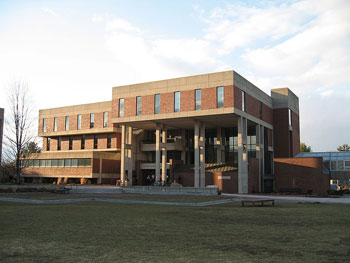
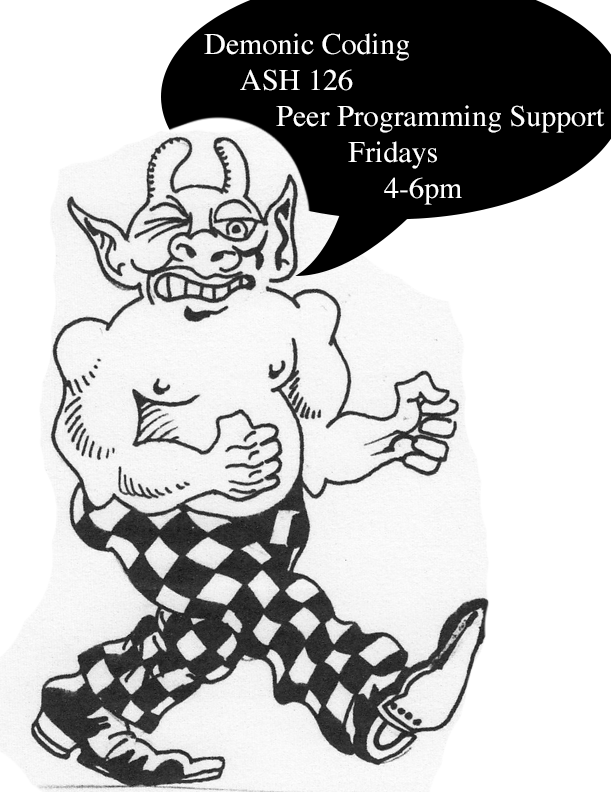

One of my CEL2 activities was serving on a Search Committee for a new Assistant Professor of Art & Technology. I was invited to join the committee by John Slepian, a professor I’d taken a course with the semester beforehand. The search committee was a very interesting look at the hiring process from start to finish. It’s one of my few professional experiences being on the hiring side. The process of narrowing down from a massive pool of a candidates to a single hire was a very daunting one, and required a staggering amount of work: reviewing resumes, conducting interviews, and finally hosting the final candidates on campus. I also found it highly impressive how much effort goes into hiring even an assistant professor.
In being a dungeon master or “DM-ing” for Deathfest, I helped to continue a proud Hampshire tradition that’s been passed down through generations of students. Each year, the organizers of the event put on a roleplaying tournament that spans late into the night. The event has incredibly rich alum backing and support. Former Hampshire students who graduated years ago fly out to attend it. It also draws in a good crowd of current students and local community members. As a DM, my main job leading up to the event is assisting with organization and planning the game or “tier” I’m going to run. One of the facts that should have come as less of a shock, but was a challenge all the same: there was not a lot of efficiency in our group. They were a highly creative and talented group, but their motivation to organize and plan in a timely manner left much to be desired. This was one of the first of many times that I stepped up and took on more responsibility. I saw a deficiency in organization from other parties, and I worked to compensate for it. This is a fact I’ve often struggled with and still do in group projects, and something I know I must strike a balance with: between being proactive and doing other people’s work for them. Despite this fact, Deathfest was my first proper look at event planning, publicity, and organization and I learned a great deal from it.
Demonic Coding was a concept and suggestion from my Committee Chair, Lee Spector. He used the structure in his courses to great effect. Students would pair off and each spend time coding while the other student looked on. The second student was not allowed to write any code of their own or take over the keyboard while the first student was working.Lee’s proposal was to translate this into a student group. I found it to be a very important model and something to demonstrate how coders of all levels can collaborate. I’ve tried to extrapolate and bring all possible lessons forward with me in my future development work.
